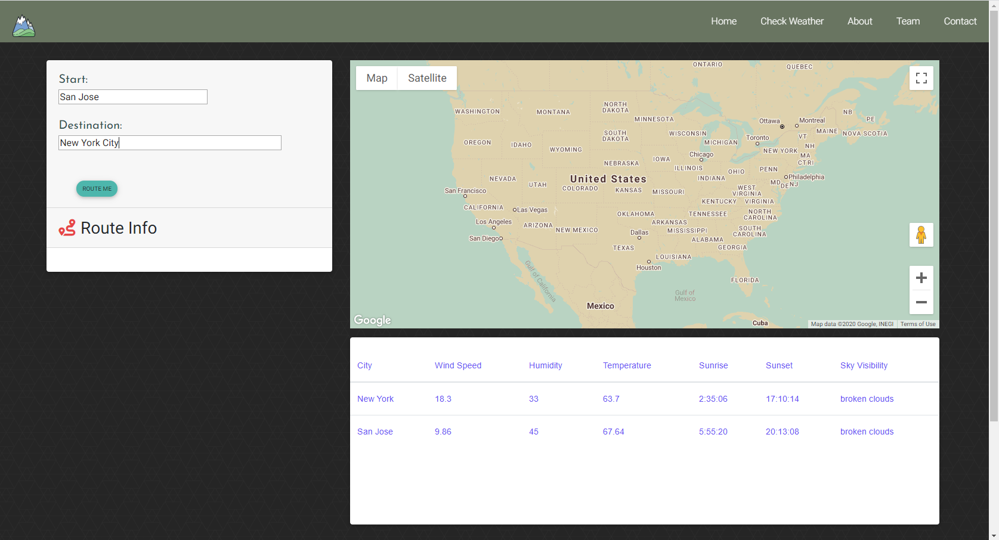

Weather to Travel
Lead devRoute-aware weather planning app that helps travelers make safer decisions before they hit the road.
- Integrated Google Maps and weather data into one trip-planning flow.
- Focused the experience around quick, actionable travel conditions.
jQueryHTMLCSSGoogle Maps API